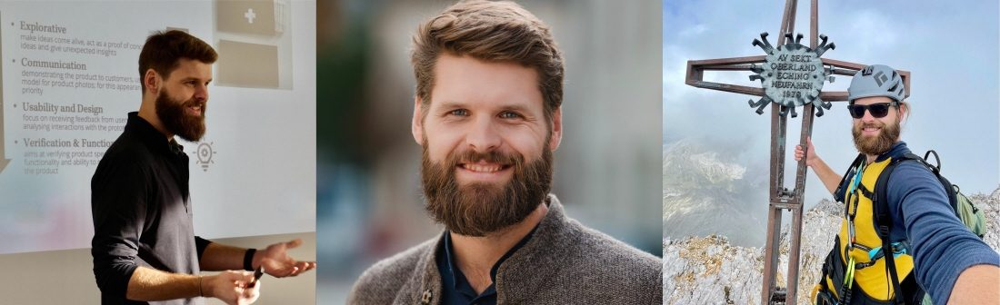

<!doctype html>
<html lang="de">
<head>
  <meta charset="utf-8" />
  <script>/* noindex the GitHub Pages preview mirror only */if(location.hostname.endsWith(".github.io")){document.write('<meta name="robots" content="noindex,nofollow">')}</script>
  <meta name="viewport" content="width=device-width, initial-scale=1, viewport-fit=cover" />
  <!-- Freeze the viewport-height unit. A mobile browser may resolve vh AND
       svh AND lvh AND dvh all against the *live* layout viewport, so every
       one of them shrinks and grows as the address bar retracts — measured on
       an iPhone 13 in Firefox mobile: 813 <-> 731, delta 82 on all four units,
       even though svh is specified to be the stable one. (Not verified in
       Safari; the freeze is engine-agnostic either way.) styles.css sizes
       vertical rhythm in vh in 136 places, so a bar transition resized the
       document by ~411px mid-scroll and the scroll position shifted under the
       user — a visible jump on every scroll direction change. styles.css
       therefore asks for calc(N * var(--vh, 1vh)) and this pins --vh to the
       height at load, which sidesteps the question of which unit a given
       engine treats as dynamic. On touch it is only refreshed when the WIDTH
       changes (rotation), never for a bar transition; on desktop, where
       resizing is deliberate, it tracks every resize. The 1vh fallback keeps
       the old behaviour if this never runs. -->
  <script>(function(){var d=document.documentElement,T=matchMedia('(pointer:coarse)').matches||innerWidth<=640,w=-1;function s(){if(T&&innerWidth===w)return;w=innerWidth;d.style.setProperty('--vh',innerHeight/100+'px')}s();addEventListener('resize',s,{passive:true});addEventListener('orientationchange',function(){w=-1;setTimeout(s,120)})})()</script>
  <meta name="theme-color" content="#000" />
  <meta name="description" content="Kristof Sarnes — Teil des Expertenteams der Munich Leadership Group für Leadership Development und Coaching." />
  <link rel="canonical" href="https://www.munichleadership.com/de/team-sarnes.html" />
  <link rel="alternate" hreflang="en" href="https://www.munichleadership.com/de/team-sarnes.html" />
  <link rel="alternate" hreflang="de" href="https://www.munichleadership.com/de/team-sarnes.html" />
  <link rel="alternate" hreflang="x-default" href="https://www.munichleadership.com/de/team-sarnes.html" />
  <meta property="og:locale" content="de_DE" />
  <meta property="og:type" content="website" />
  <meta property="og:site_name" content="Munich Leadership Group" />
  <meta property="og:title" content="Kristof Sarnes — Munich Leadership Group" />
  <meta property="og:description" content="Kristof Sarnes — Teil des Expertenteams der Munich Leadership Group für Leadership Development und Coaching." />
  <meta property="og:url" content="https://www.munichleadership.com/de/team-sarnes.html" />
  <meta property="og:image" content="https://www.munichleadership.com/assets/og-image.png" />
  <meta property="og:image:width" content="1200" />
  <meta property="og:image:height" content="630" />
  <meta name="twitter:card" content="summary_large_image" />
  <meta name="twitter:title" content="Kristof Sarnes — Munich Leadership Group" />
  <meta name="twitter:description" content="Kristof Sarnes — Teil des Expertenteams der Munich Leadership Group für Leadership Development und Coaching." />
  <meta name="twitter:image" content="https://www.munichleadership.com/assets/og-image.png" />
  <title>Kristof Sarnes — Munich Leadership Group</title>
  <link rel="icon" href="../assets/mark.svg" type="image/svg+xml" />
  <link rel="stylesheet" href="../styles.min.css?v=641" />
  <style>
    body { overflow: visible; }
    .standalone { overflow: visible; min-height: 100dvh; }
    .profile-hero { position: relative; height: 58vh; min-height: 360px; overflow: hidden; margin-top: calc(env(safe-area-inset-top, 0px) + clamp(66px, 6vw + 24px, 86px)); }
    .profile-hero__media { position: absolute; inset: 0; }
    .profile-hero__media img { width: 100%; height: 100%; object-fit: cover; object-position: center 20%; }
    .profile-hero__scrim { position: absolute; inset: 0; background: linear-gradient(to top, #000 0%, rgba(14,15,16,0.08) 15%, rgba(14,15,16,0) 100%); }
    .profile-hero__copy { position: absolute; inset: 0; display: flex; flex-direction: column; justify-content: flex-end; padding: clamp(24px,5vw,72px) clamp(24px,5vw,72px) clamp(32px,6vh,64px); }
    .profile-hero__name { font-size: clamp(30px,4.5vw,58px); font-weight: 600; letter-spacing: -0.02em; color: #fff; margin: 0 0 10px; line-height: 1.1; }
    .profile-hero__role { font-size: 13px; font-weight: 500; letter-spacing: 0.12em; text-transform: uppercase; color: rgba(255,255,255,0.50); margin: 0; }
    .profile-content { background: #000; padding: clamp(48px,7vh,96px) clamp(24px,5vw,72px) 0; }
    .profile-body { max-width: 820px; margin: 0 auto clamp(48px,7vh,80px); }
    .profile-body p { font-size: 15px; line-height: 1.75; color: rgba(255,255,255,0.65); margin: 0 0 18px; }
    .profile-body p strong { color: rgba(255,255,255,0.88); }
    .profile-body p.profile-pull { font-size: clamp(20px, 2.4vw, 28px) !important; line-height: 1.4 !important; color: #fff !important; font-weight: 500 !important; border-left: 3px solid var(--mlg-red); padding-left: 22px; margin: 32px 0; }
    .profile-section-label { font-size: 12px; font-weight: 500; letter-spacing: 0.18em; text-transform: uppercase; color: var(--mlg-red); margin: 32px 0 14px; }
    .profile-tags { display: flex; flex-wrap: wrap; gap: 8px; margin: 0 0 8px; }
    .profile-tag { font-size: 12px; font-weight: 500; letter-spacing: 0.05em; color: rgba(255,255,255,0.60); border: 1px solid rgba(255,255,255,0.12); border-radius: 999px; padding: 5px 14px; }
    .profile-quote { max-width: 820px; margin: 0 auto clamp(40px,6vh,72px); padding: 32px 40px; background: rgba(181,0,52,0.10); border: 1px solid rgba(181,0,52,0.28); border-radius: 8px; }
    .profile-quote__label { font-size: 13px; font-weight: 500; letter-spacing: 0.18em; text-transform: uppercase; color: var(--mlg-red); margin: 0 0 14px; text-align: center; }
    .profile-quote__text { font-size: clamp(15px,1.8vw,18px); line-height: 1.7; color: rgba(255,255,255,0.80); margin: 0; font-style: italic; text-align: center; }
    .profile-cta { text-align: center; padding: clamp(32px,5vh,56px) 0; border-top: 1px solid rgba(255,255,255,0.08); max-width: 1200px; margin: 0 auto; }
    .profile-cta p { color: rgba(255,255,255,0.55); font-size: 14px; margin: 0 0 20px; }
    .profile-cta__btn { display: inline-flex; align-items: center; gap: 8px; background: var(--mlg-red); color: #fff; font-family: var(--font-sans); font-size: 13px; font-weight: 500; letter-spacing: 0.06em; text-transform: uppercase; text-decoration: none; padding: 13px 28px; border-radius: 999px; transition: opacity 200ms; border: none; cursor: pointer; }
    .profile-cta__btn:hover { opacity: 0.85; }
    @media (max-width: 640px) { .profile-quote { padding: 24px; } }
  </style>
  <script type="application/ld+json">
  [{"@context":"https://schema.org","@type":"BreadcrumbList","itemListElement":[{"@type":"ListItem","position":1,"name":"Home","item":"https://www.munichleadership.com/"},{"@type":"ListItem","position":2,"name":"Team","item":"https://www.munichleadership.com/#slide=8"},{"@type":"ListItem","position":3,"name":"Kristof Sarnes","item":"https://www.munichleadership.com/de/team-sarnes.html"}]},{"@context":"https://schema.org","@type":"Person","name":"Kristof Sarnes","image":"https://www.munichleadership.com/assets/team/sarnes-banner.jpg","url":"https://www.munichleadership.com/de/team-sarnes.html","worksFor":{"@type":"Organization","name":"Munich Leadership Group","url":"https://www.munichleadership.com/"}}]
  </script>
  <!-- Umami analytics: self-hosted, cookieless, first-party (served from our own
       /stats path so ad blockers do not strip it). No consent banner required. -->
  <script defer src="https://www.munichleadership.com/stats/script.js" data-website-id="f2a5285d-db28-4bc8-af6d-729f35847288"></script>
  <!-- Umami session replay + heatmaps. Self-hosted: recordings never leave our
       own server. Input values are masked by the recorder (maskAllInputs).
       NOTE: unlike the cookieless counter above, behavioural recording is
       generally consent-relevant under GDPR — see privacy policy. -->
  <script defer src="https://www.munichleadership.com/stats/recorder.js" data-website-id="f2a5285d-db28-4bc8-af6d-729f35847288"></script>
</head>
<body>
  <main class="standalone">
    <div class="topbar">
      <a class="topbar__logo" href="index.html#slide=0" aria-label="Munich Leadership Group — back to home">
        
      </a>
    </div>
    <span class="corner-mark" aria-hidden="true">
      <svg class="mark__path mark__path--1" viewBox="236 0 67 65"><path d="M302.059,64.913L293.891,8.134L236.69,0.066L302.059,0.066L302.059,64.913Z" fill="currentColor"/></svg>
      <svg class="mark__path mark__path--2" viewBox="236 0 67 65"><path d="M287.625,64.906L281.26,20.665L236.69,14.375L287.625,14.375L287.625,64.906Z" fill="currentColor"/></svg>
      <svg class="mark__path mark__path--3" viewBox="236 0 67 65"><path d="M274.971,64.942L270.186,31.681L236.685,26.958L274.971,26.958L274.971,64.942Z" fill="#b50034"/></svg>
    </span>

    <div class="profile-hero">
      <div class="profile-hero__media" style="background-image:url('../assets/team/sarnes-banner.jpg');background-size:cover;background-position:center;background-repeat:no-repeat;">
        
      </div>
      <div class="profile-hero__scrim"></div>
      <div class="profile-hero__copy">
        <a class="page-back" href="index.html#slide=8">
          <svg viewBox="0 0 24 24" width="14" height="14" fill="none" stroke="currentColor" stroke-width="1.5" stroke-linecap="round" stroke-linejoin="round" aria-hidden="true"><path d="M19 12H5M12 19l-7-7 7-7"/></svg>
          <span data-de="zurück zum Team">zurück zum Team</span>
        </a>
        <p class="profile-hero__eyebrow">Senior Executive</p>
        <h1 class="profile-hero__name">Kristof<br>Sarnes</h1>
        <p class="profile-hero__role">Munich Leadership Group</p>
      </div>
    </div>

    <div class="profile-content">
      <nav class="breadcrumb" aria-label="Breadcrumb">
        <a href="index.html#slide=8">Team</a>
        <span class="breadcrumb__sep" aria-hidden="true">/</span>
        <span class="breadcrumb__current">Kristof Sarnes</span>
      </nav>


      <div class="profile-body">
        
        <p class="profile-section-label" data-de="Persönliches Profil">Persönliches Profil</p>

        <p data-de="Kris hält einen Bachelor in Maschinenbau der Ostfalia und einen Master in Wirtschaftsingenieurwesen der TU Braunschweig, ergänzt durch zusätzliche Ausbildungen in Prozessdesign, Moderation und agiler Entwicklung. Er hat in der Automobil-, Chemie-, Halbleiter- und öffentlichen Branche gearbeitet und bringt seltene unternehmerische Erfahrung aus einem <strong>Moonshot-Robotik-Start-up</strong> sowie dem Aufbau einer intrapreneuriellen Workshop- und Beratungseinheit von Grund auf mit.">Kris hält einen Bachelor in Maschinenbau der Ostfalia und einen Master in Wirtschaftsingenieurwesen der TU Braunschweig, ergänzt durch zusätzliche Ausbildungen in Prozessdesign, Moderation und agiler Entwicklung. Er hat in der Automobil-, Chemie-, Halbleiter- und öffentlichen Branche gearbeitet und bringt seltene unternehmerische Erfahrung aus einem <strong>Moonshot-Robotik-Start-up</strong> sowie dem Aufbau einer intrapreneuriellen Workshop- und Beratungseinheit von Grund auf mit.</p>

        <p class="profile-pull" data-de="Als authentischer Motivator und Innovator besteht Kris&rsquo; besonderer Beitrag zum Erfolg unserer Kunden in seiner Fähigkeit, Transformation wirklich begeisternd zu machen.">Als authentischer Motivator und Innovator besteht Kris’ besonderer Beitrag zum Erfolg unserer Kunden in seiner Fähigkeit, Transformation wirklich begeisternd zu machen.</p>

        <p data-de="Er ist überzeugt, dass echter Wandel entsteht, wenn Menschen das Vertrauen spüren, Verantwortung zu übernehmen &mdash; und dass Performance, gestützt auf Authentizität, das Fundament einer dauerhaften Teamkultur ist.">Er ist überzeugt, dass echter Wandel entsteht, wenn Menschen das Vertrauen spüren, Verantwortung zu übernehmen — und dass Performance, gestützt auf Authentizität, das Fundament einer dauerhaften Teamkultur ist.</p>

        <p data-de="Seine Arbeit stützt sich auf das <strong>Extreme Ownership</strong>-Führungsmodell, agile Methoden und eine tiefe Überzeugung von Vertrauen als zentralem Treiber der Teamperformance. Er gestaltet und moderiert Lernreisen, die Führungskräfte herausfordern, anders zu denken und zu handeln.">Seine Arbeit stützt sich auf das <strong>Extreme Ownership</strong>-Führungsmodell, agile Methoden und eine tiefe Überzeugung von Vertrauen als zentralem Treiber der Teamperformance. Er gestaltet und moderiert Lernreisen, die Führungskräfte herausfordern, anders zu denken und zu handeln.</p>

        <p data-de="Kris ist außerdem Experte für <strong>ganzheitliches Innovationsmanagement</strong>: von der MVP-Entwicklung und dem Prototyping bis hin zu Social-Media-Strategie und digitaler Transformation. Er bringt in jedes Engagement die Präzision eines Ingenieurs und die Energie eines Unternehmers ein.">Kris ist außerdem Experte für <strong>ganzheitliches Innovationsmanagement</strong>: von der MVP-Entwicklung und dem Prototyping bis hin zu Social-Media-Strategie und digitaler Transformation. Er bringt in jedes Engagement die Präzision eines Ingenieurs und die Energie eines Unternehmers ein.</p>

        <p class="profile-section-label" data-de="Kompetenzfelder">Kompetenzfelder</p>
        <div class="profile-tags">
          <span class="profile-tag" data-de="Team- &amp; Führungskräfteentwicklung">Team- & Führungskräfteentwicklung</span>
          <span class="profile-tag" data-de="Workshop-Design &amp; -Moderation">Workshop-Design & -Moderation</span>
          <span class="profile-tag">Cultural Transformation</span>
          <span class="profile-tag">Agile Transformation</span>
          <span class="profile-tag" data-de="Innovationsmanagement">Innovationsmanagement</span>
          <span class="profile-tag">MVP &amp; Prototyping</span>
          <span class="profile-tag" data-de="Unternehmertum">Unternehmertum</span>
        </div>
      </div>

      <div class="profile-quote">
        <p class="profile-quote__label" data-de="So werden Sie zum Helden">So werden Sie zum Helden</p>
        <p class="profile-quote__text" data-de="„Tu Gutes, gib alles, verschiebe Grenzen und hab Spaß dabei.“">„Tu Gutes, gib alles, verschiebe Grenzen und hab Spaß dabei.“</p>
      </div>

      <div class="profile-cta">
        <a class="profile-cta__btn" href="index.html#slide=10">
          <span data-de="Kontaktieren Sie uns">Kontaktieren Sie uns</span>
          <svg viewBox="0 0 24 24" width="14" height="14" fill="none" stroke="currentColor" stroke-width="2" stroke-linecap="round" stroke-linejoin="round" aria-hidden="true"><path d="M5 12h14M13 5l7 7-7 7"/></svg>
        </a>
        <div style="margin-top: 14px;">
          <button class="profile-cta__btn" type="button" onclick="window.print()">
            <span data-de="PDF erstellen">PDF erstellen</span>
            <svg viewBox="0 0 24 24" width="14" height="14" fill="none" stroke="currentColor" stroke-width="2" stroke-linecap="round" stroke-linejoin="round" aria-hidden="true"><path d="M6 9V2h12v7M6 18H4a2 2 0 01-2-2v-5a2 2 0 012-2h16a2 2 0 012 2v5a2 2 0 01-2 2h-2M6 14h12v8H6z"/></svg>
          </button>
        </div>
        <div style="margin-top: 20px;">
          <a class="page-back" href="index.html#slide=8">
            <svg viewBox="0 0 24 24" width="14" height="14" fill="none" stroke="currentColor" stroke-width="1.5" stroke-linecap="round" stroke-linejoin="round" aria-hidden="true"><path d="M19 12H5M12 19l-7-7 7-7"/></svg>
            <span data-de="zurück zum Team">zurück zum Team</span>
          </a>
        </div>
      

      <footer class="imprint" style="margin-top: 2px;">
        <p class="imprint__links">
          <a href="disclaimer.html" data-de="Disclaimer">Disclaimer</a>
          <span aria-hidden="true">&middot;</span>
          <a href="privacy-policy.html" data-de="Datenschutz">Datenschutz</a>
          <span aria-hidden="true">&middot;</span>
          <a href="terms-of-service.html" data-de="Nutzungsbedingungen">Nutzungsbedingungen</a>
          <span aria-hidden="true">&middot;</span>
          <a href="https://www.kununu.com/de/munich-leadership-group1/kommentare" target="_blank" rel="noopener">kununu</a>
          <span aria-hidden="true">&middot;</span>
          <span class="imprint__copy" data-de="© 2026 Munich Leadership Group">&copy; 2026 Munich Leadership Group</span>
          <span aria-hidden="true">&middot;</span>
          <a href="https://www.linkedin.com/company/munich-leadership-group/" target="_blank" rel="noopener" aria-label="Munich Leadership Group on LinkedIn" style="display:inline-flex;vertical-align:middle;">
            <svg viewBox="0 0 24 24" width="17" height="17" fill="currentColor" aria-hidden="true"><path d="M20.45 20.45h-3.56v-5.57c0-1.33-.02-3.04-1.85-3.04-1.85 0-2.14 1.45-2.14 2.94v5.67H9.35V9h3.42v1.56h.05c.48-.9 1.64-1.85 3.37-1.85 3.6 0 4.27 2.37 4.27 5.46v6.28zM5.34 7.43a2.06 2.06 0 1 1 0-4.13 2.06 2.06 0 0 1 0 4.13zM7.12 20.45H3.55V9h3.57v11.45zM22.22 0H1.77C.79 0 0 .77 0 1.72v20.55C0 23.23.79 24 1.77 24h20.45c.98 0 1.78-.77 1.78-1.72V1.72C24 .77 23.2 0 22.22 0z"/></svg>
          </a>
        </p>
      </footer>

    </div>

    <!-- PDF-only footer (hidden on screen, centered at the bottom of the printed page) -->
    <footer class="pdf-footer" aria-hidden="true">
      <p class="pdf-footer__brand">Munich Leadership Group</p>
      <p class="pdf-footer__contact">info@munichleadership.com &middot; +49 89 413 1910</p>
    </footer>
  </main>

  <script>
    document.querySelectorAll('.page-back').forEach((a) => {
      a.addEventListener('click', (e) => {
        const href = a.getAttribute('href');
        if (!href) return;
        e.preventDefault();
        document.querySelector('.standalone').classList.add('is-leaving');
        setTimeout(() => { location.href = href; }, 320);
      });
    });
  </script>
  <script src="../subnav.min.js?v=245"></script>
</body>
</html>
